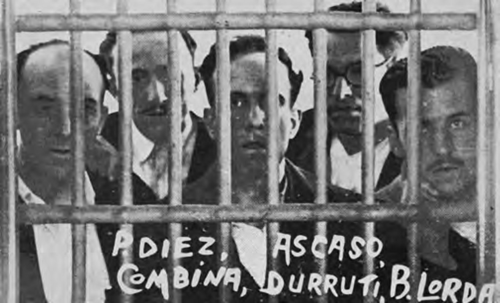

Actualidad · Obreros, no votéis · España
Cuando la CNT pidió no votar, en Alcalá de Gurrea votaron 87 de 829 electores; dos años después, 517
En noviembre de 1933, la CNT pidió a los obreros que no votaran. En los quince pueblos que tres semanas después proclamaron el comunismo libertario votó menos de la mitad del censo. En febrero de 1936, con los presos en la cárcel y sin campaña contra las urnas, votaron siete de cada diez. Así se ve la abstención anarquista en el Atlas electoral de la Segunda República.
Por Nacho G. del Álamo ·

Cada párrafo lleva una etiqueta: dato (cifra comprobable con las fuentes), patrón (relación que se repite, sin afirmar la causa), hipótesis (explicación posible, sin dos fuentes independientes) o contexto (hechos y declaraciones publicados por otros, enlazados). Cómo verificamos
ContextoEl domingo 19 de noviembre de 1933 abrieron los colegios electorales de Alcalá de Gurrea, un pueblo de regadío al norte de Zaragoza, entre el Gállego y la vía del tren de Canfranc. Había 829 electores en la lista. Por primera vez podían votar las mujeres. Al cerrar, habían votado 87. Uno de cada diez.
ContextoTres semanas después, el 9 de diciembre, los anarquistas del pueblo proclamaron el comunismo libertario. Así lo recoge la Wikipedia en inglés en su lista de los pueblos de Aragón y La Rioja que se levantaron aquellos días. El historiador Roberto Villa García, en su estudio sobre la insurrección, cita a Alcalá de Gurrea entre los lugares donde hubo muertos o heridos cuando volvió la Guardia Civil, y donde los insurrectos mataron o hirieron a los guardas del ferrocarril que intentaban impedir los sabotajes en la vía. Cuando todo acabó, el Gobierno tuvo que nombrar concejales interinos.
DatoEl 16 de febrero de 1936, Alcalá de Gurrea volvió a votar. Esta vez lo hicieron 517 de sus 850 electores: el 61%. El Frente Popular sacó el 86,9% de los votos a candidatos, según el Atlas Electoral de la Segunda República de la Universitat Pompeu Fabra. Las derechas, el 11,6%.
ContextoEntre una fecha y otra hay una consigna, una insurrección, una revolución en Asturias y unos 30.000 presos. Este reportaje sigue esa consigna por los pueblos donde más se notó.
«Obreros, no votéis»
ContextoLa Confederación Nacional del Trabajo era entonces el mayor sindicato de España. Era anarcosindicalista: no se presentaba a elecciones, no tenía diputados y desconfiaba del Estado, de la República y de los partidos, también de los de izquierda. En 1931 muchos de sus afiliados habían votado a la conjunción republicano-socialista. Dos años después, con Azaña en el Gobierno, la represión de las huelgas y la matanza de Casas Viejas en la memoria, la consigna fue la contraria.
ContextoCasas Viejas era una aldea de Medina-Sidonia, en Cádiz. El 11 de enero de 1933, sus jornaleros anarquistas se levantaron. La Guardia Civil y la Guardia de Asalto cercaron la choza de Francisco Cruz Gutiérrez, «Seisdedos», «un carbonero analfabeto cuya choza fue el refugio de los insurrectos», según Público. Murieron unas veinte personas. El capitán Manuel Rojas declaró después que la orden que había recibido de la Dirección General de Seguridad era: «Ni heridos ni prisioneros. Los tiros, a la barriga». Fue condenado a 21 años de cárcel y cumplió dos. Azaña dimitió en septiembre.
ContextoLa CNT y la FAI, la Federación Anarquista Ibérica, organizaron en noviembre una campaña contra las urnas, con mítines, carteles y manifiestos. El mayor fue en Valencia. Habló Buenaventura Durruti, y Villa García recoge sus palabras en Historia y Política: «Si el día 20 [de noviembre] hemos conseguido una abstención electoral de más de un cincuenta por ciento, le diremos al gobierno: ¡Basta ya! ¡No nos representáis! Y si controlamos un millón de trabajadores…, la revolución estará hecha con solo querer».

ContextoLa campaña no era solo contra las izquierdas en el Gobierno. Según Villa García, el objetivo era «legitimar una insurrección post-electoral apartando del proceso político a la “clase trabajadora”», y así lo cuenta en Pasado y Memoria. El 2 de noviembre, el Pleno de Regionales de la CNT se había comprometido a levantarse si «triunfasen las tendencias fascistas». El 19 ganaron las derechas. El 8 de diciembre, el día en que se abrían las nuevas Cortes, empezó la insurrección.
Quince pueblos, dos elecciones
DatoLa Wikipedia en inglés cita quince pueblos donde se proclamó el comunismo libertario en diciembre de 1933: cinco en Huesca (Alcalá de Gurrea, Alcampell, Almudévar, Albalate de Cinca y Belver de Cinca), cinco en Teruel (Alcorisa, Castellote, Beceite, Mas de las Matas y Valderrobres) y cinco en La Rioja (Arnedo, Briones, Calahorra, Cenicero y Fuenmayor). El Atlas tiene la participación de los quince en las dos elecciones.
DatoEn noviembre de 1933, en esos quince pueblos votó el 45,5% del censo. En febrero de 1936, el 70,8%. En los otros 4.112 municipios de los que el Atlas tiene la participación en las dos elecciones, la subida fue mucho menor: del 69,7% al 73,3%.
DatoLos saltos más grandes están en Huesca. En Belver de Cinca votaron 154 de 1.006 electores en 1933 y 671 en 1936. En Albalate de Cinca, donde según Villa García los anarquistas encerraron a 150 vecinos durante la insurrección, la participación pasó del 31% al 85%. En Almudévar, del 24% al 51%. En La Rioja, Cenicero pasó del 41% al 76%, y el Frente Popular sacó allí el 86,7%.
DatoDe los 4.127 municipios de España con datos en las dos elecciones, 341 subieron más de 20 puntos de participación entre 1933 y 1936. 100 están en la provincia de Huesca.
PatrónEl patrón es claro: donde la insurrección prendió, la abstención de 1933 había sido mucho mayor que en el resto de España, y en 1936 casi desapareció. En la mayoría de los quince pueblos ganó el Frente Popular, aunque no en todos: en Castellote, Mas de las Matas y Arnedo ganaron las derechas.
HipótesisQue esa abstención fuera obra de la CNT es la explicación más probable, pero los datos no la prueban: el Atlas no dice quién dejó de votar. En 1933 se abstuvieron también votantes de otros partidos, y en un pueblo pequeño basta el miedo, el boicot o la lluvia para cambiar mucho la cifra.
Cádiz, Sevilla y Zaragoza
DatoEn Andalucía, donde la CNT tenía decenas de miles de afiliados jornaleros, el Atlas no tiene la participación por municipio, pero sí por circunscripción. En la provincia de Cádiz votó en 1933 el 37,3% del censo, la cifra más baja de España. En 1936, el 59,5%. En las provincias de Sevilla y Málaga, sin contar las capitales, votó en 1933 la mitad del censo. En Zaragoza capital, uno de los grandes focos de la CNT y el escenario de los combates más largos de diciembre, la participación pasó del 54,8% al 85,7%.
DatoEn toda España, según los datos del Atlas por circunscripción, la participación pasó del 66,3% en 1933 al 71,9% en 1936. En provincias como Salamanca o Navarra, donde la CNT apenas existía, apenas cambió.
DatoCasas Viejas votaba entonces dentro de Medina-Sidonia, que tenía 6.632 electores en 1936. En 1933 ganaron allí las derechas, con el 56,0% de los votos a candidatos. En 1936 ganó el Frente Popular, con el 61,4%. El Atlas no tiene la participación de ninguna de las dos elecciones en Medina-Sidonia.
Febrero de 1936: los presos
ContextoEn octubre de 1934, la insurrección socialista y la revolución de Asturias acabaron con miles de detenidos. A finales de 1935 se hablaba de unos 30.000 presos políticos. El Frente Popular prometía la amnistía. Dentro de la CNT, la consigna de no votar ya no era unánime.
ContextoDiego Abad de Santillán, de la FAI, escribió años después que «la abstención era el triunfo de Gil Robles, y… la restauración de los viejos poderes monárquicos y clericales», y que «el triunfo de las derechas esta vez sería la implantación de un régimen fascista en España por vía legal». Villa García recoge esa cita en su artículo de 2014, y la de Abad diciendo que en las publicaciones de la FAI y de la CNT no se encontrarán «recomendaciones para no votar».
«El obrero que vota es siempre conejillo de Indias de los partidos… No puede ni debe interesarle ni la República del 14 de abril ni la del 19 de noviembre».
Solidaridad Obrera, editorial del 14 de febrero de 1936, dos días antes de las elecciones, citado por Villa García.
ContextoAhí empieza el debate de los historiadores. Una parte sostiene que en 1936 la CNT dejó votar a los suyos, sin campaña abstencionista, y que eso dio la victoria al Frente Popular, igual que la abstención de 1933 la había dado a las derechas. Villa García lo discute en «Obreros, no votéis»: según él, sí hubo campaña abstencionista en 1936, aunque «sin estridencias ni demagogias», y no hubo un acercamiento real entre la CNT y las izquierdas. Durruti, en un mitin de aquella campaña, dijo que para la libertad de los presos les encontrarían «no en las urnas, sino… en la calle».
ContextoVilla García también rebaja el alcance de lo de 1933. Escribe que los resultados de la campaña abstencionista fueron «en general, magros», y que la insurrección de diciembre movilizó a «unos pocos miles en una organización que declaraba sobrepasar, como mínimo, el medio millón». Juan Peiró, de la propia CNT, la definió como «un movimiento de pequeños grupos, de guerrilleros».
PatrónLos datos del Atlas son compatibles con las dos lecturas. En la mayor parte de España, la participación subió unos cinco puntos entre 1933 y 1936. Donde la CNT era fuerte, subió mucho más. Y en los pueblos donde la CNT fue capaz de levantarse en armas, la abstención de 1933 fue enorme. La campaña de noviembre pudo ser magra en el conjunto del país y decisiva en un puñado de comarcas.
Lo que queda
DatoEn julio de 2023, los quince pueblos del comunismo libertario votaron por encima de la media de España: el 73,9% de su censo, frente al 70,4% del conjunto del país, sin contar el voto exterior. Calahorra, la más grande, se quedó casi en la media, con el 70,5%. Alcalá de Gurrea tenía 215 electores y votó el 80%.
DatoLa provincia de Cádiz sigue votando poco. En 2023 votó el 65,1% de su censo, cinco puntos menos que la media. Benalup-Casas Viejas, que se separó de Medina-Sidonia en 1991, según la Wikipedia, votó el 67,1%. El PSOE sacó allí el 47,5%.
ContextoLa abstención de hoy no tiene nada que ver con la de 1933. Nadie pide a los jornaleros de Cádiz que no voten, y la CNT es un sindicato pequeño. Las razones por las que una provincia vota menos que otra son muchas y casi ninguna es ideológica: la edad, la renta, la movilidad, el paro. Este reportaje no busca una herencia que los datos no muestran.
ContextoLo que sí muestran es que en 1933, por primera y última vez en España, un movimiento organizado consiguió que miles de personas no fueran a votar a propósito, y que en algunos pueblos se notó tanto como para que hoy, noventa años después, se vea en una tabla. En Alcalá de Gurrea, de cada diez electores, nueve se quedaron en casa.
Lo que estos datos no dicen
ContextoEl Atlas no dice quién votó ni quién se abstuvo, solo cuántos. Atribuir la abstención de 1933 a la CNT es una explicación de los historiadores, no un dato. La participación solo se conoce por municipio en algo más de la mitad de España: falta en casi toda Andalucía, Barcelona y Valencia, justo donde la CNT era más fuerte, y por eso esas provincias aparecen por circunscripción. En 1933 hubo segunda vuelta en algunas provincias; aquí se usa la primera. El censo era de mayores de 23 años. La lista de pueblos donde se proclamó el comunismo libertario es la de la Wikipedia en inglés; hubo más pueblos implicados en la insurrección.
Mira 1933 y 1936 en tu municipio, en el mapa · Más: Las mujeres votaron por primera vez en 1933 · El mapa de 1936 apenas se parece al de hoy
Método y fuentes
- Qué se compara
- Participación y voto en las generales del 19 de noviembre de 1933 y del 16 de febrero de 1936 en los municipios y circunscripciones del Atlas; los 15 pueblos que proclamaron el comunismo libertario en diciembre de 1933, frente al resto.
- Límites
- El Atlas da la participación de 1933 solo en una parte de los municipios. No sabemos quién se abstuvo por la consigna de la CNT y quién por otras razones. La cifra de Sevilla capital en 1936 se excluye por inverosímil. En 1933 y 1936 se votaba con listas abiertas y varios votos por elector: el peso de cada candidatura es su parte de los votos a candidatos. El censo de entonces era de mayores de 23 años; el de 2023, de 18, sin voto exterior.
- Cómo se calcula
- Participación: votantes sobre censo. Cambio de participación entre 1933 y 1936 en cada municipio con las dos cifras. Media ponderada por el censo. Cifras reproducibles con los scripts del expediente de la pieza. Metodología de Actualidad · Metodología del Atlas
- Fuentes
- Toni Rodon, Pau Vall-Prat y Diego Martín Álvarez, Electoral Atlas of the Spanish Second Republic (1931-1936), Universitat Pompeu Fabra, CORA Repositori de Dades de Recerca (CC BY-NC-SA 4.0)
- Roberto Villa García, «La CNT contra la República: la insurrección revolucionaria de diciembre de 1933», Historia y Política (2011)
- Roberto Villa García, «Obreros, no votéis», Pasado y Memoria (2014)
- Público, sobre los sucesos de Casas Viejas
- Wikipedia, «Anarchist insurrection of December 1933» (consultada el 23-10-2026)
- Wikipedia, «Benalup-Casas Viejas» (consultada el 23-10-2026)
- Autoría
- Nacho G. del Álamo
- Revisión de datos y texto
- Nacho G. del Álamo, 23 de octubre de 2026
- Publicado · actualizado
- 23 de octubre de 2026 · 23 de octubre de 2026
- Correcciones
- Ninguna.
Serie «Historia electoral»: 29 piezas
- Pozuelo, Getxo o Ávila: 1.932 municipios donde el PSOE nunca ha ganado unas generales
- Siete partidos distintos han ganado en Mont-roig del Camp: ha cambiado 11 veces de ganador en 16 generales
- En Baltar votó el 16 % en 1979; hoy vota el 79 %. La participación imposible del interior gallego
- En Arona votó uno de cada cinco electores en las europeas de 2014
- Tres partidos en 1,3 puntos: el empate a tres de Euskadi en 2023 no tiene precedentes
- El voto en blanco se multiplicó por seis entre 1977 y 2000, y desde entonces se ha reducido a la mitad
- Antes de Teruel Existe: los cinco diputados andalucistas de 1979 y el 19,7 % de Cádiz
- De 23,6 a 35,1 millones: el censo electoral ha crecido un 49 % desde 1977
- Las europeas solo superan el 60 % de participación cuando coinciden con las municipales
- El mapa de 1936 apenas se parece al de hoy: 1.545 pueblos que votaron a las derechas eligen ahora a la izquierda
- Fuente Vaqueros, el pueblo de Lorca, dio el 77,5 % al Frente Popular; Víznar, donde lo mataron, el 63 % a las derechas
- Gernika votó al PNV en 1936 y volvió a hacerlo en 2023, por 11 votos; Belchite tiene hoy menos electores que antes de su batalla
- Las mujeres votaron por primera vez en 1933 y ganaron las derechas; en 1936 volvieron a votar y 888 pueblos se pasaron al Frente Popular
- 256 pueblos han votado a la izquierda en 1936 y en las 16 generales de la democracia; 1.610, siempre a la derecha
- Estás aquíCuando la CNT pidió no votar, en Alcalá de Gurrea votaron 87 de 829 electores; dos años después, 517
- Riaño dio el 86 % a las derechas en 1936; Mequinenza, el 89 % al Frente Popular. Así votaban los pueblos que se tragaron los pantanos
- Vallecas dio el 86 % al Frente Popular y Franco la borró del mapa: los 1.334 pueblos que votaron en 1936 y ya no existen
- Mieres votó en masa dieciséis meses después de la revolución: el 86 % fue a las urnas y el 79 % eligió al Frente Popular
- Vic dio el 69 % a la Lliga en 1933 y hoy es la gran ciudad de Junts; L'Hospitalet dio el 77 % al Front d'Esquerres de Companys y hoy vota al PSC
- Los pueblos que levantó Franco votan más a Vox que sus vecinos: en Tiétar, Rosalejo y Pueblonuevo de Miramontes pasó del 25 %
- Ver las 29 piezas de la serie
Más datos: más piezas sobre historia electoral.
Sigue leyendo
- El sorpasso que no saleEl PP saca 6 puntos al PSOE en las encuestas: ni el mayor fallo de la última década, el de 2023, daría el sorpasso que anuncia Iván Redondo
- Ciudades partidasSevilla vota por barrios y Lugo, mezclada: el índice que mide qué capitales están partidas por el voto
- Ni tan ricos ni tan obrerosVox busca el voto de los barrios obreros: en la Región de Murcia, nueve de cada diez secciones pobres ya votan más a PP y Vox que a PSOE y Sumar
- ActualidadTodas las piezas de actualidad
- AtlasAtlas de las anomalías electorales